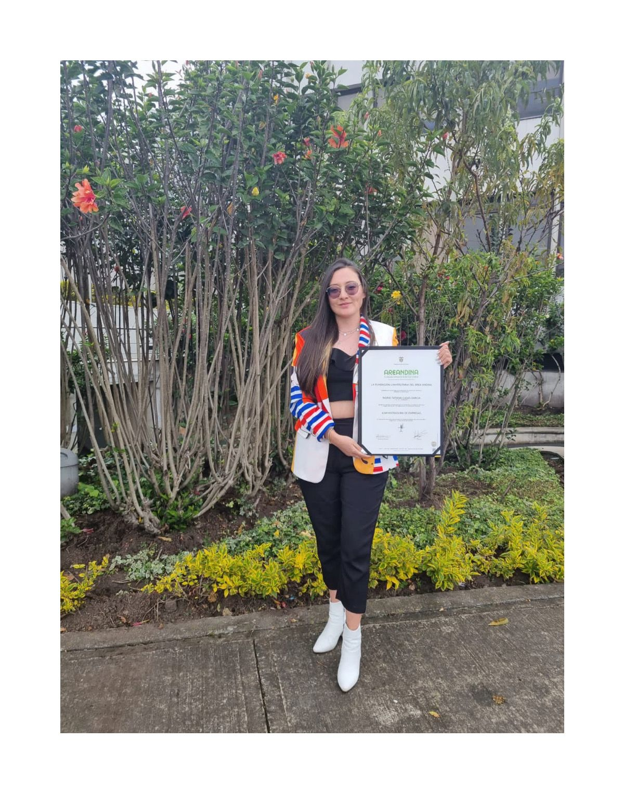

Mi historia
Soy Tatiana Casas García, una administradora de empresas apasionada por la tecnología. Después de ver cómo los procesos administrativos se volvieron cada vez más automatizados, decidí reinventarme profesionalmente.
Hoy estoy en formación como desarrolladora Full Stack y estoy emocionada de crear soluciones tecnológicas con impacto. Mi experiencia en gestión empresarial y análisis de datos me da una perspectiva única para resolver problemas de forma integral.
Me encanta aprender, trabajar en equipo y enfrentar nuevos desafíos. Disfruto combinar la lógica de la programación con el diseño centrado en las personas.
¿Qué estoy buscando?
Como desarrolladora Full Stack en constante aprendizaje, mi objetivo actual es establecer relaciones profesionales para participar en proyectos freelance o colaborativos. Busco entornos donde pueda contribuir con mis habilidades, expandir mi expertise y crecer junto a otros. La modalidad de trabajo remoto es de mi interés para lograr un equilibrio entre mi desarrollo profesional y mi bienestar personal.